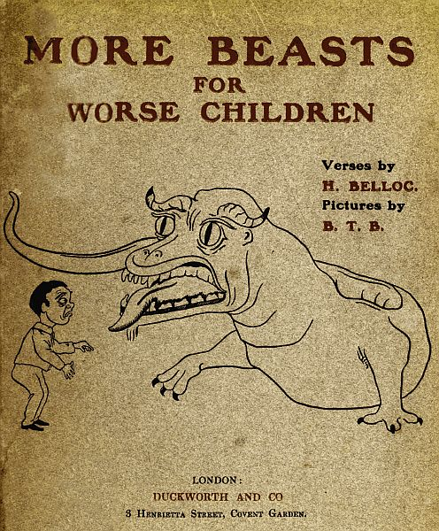
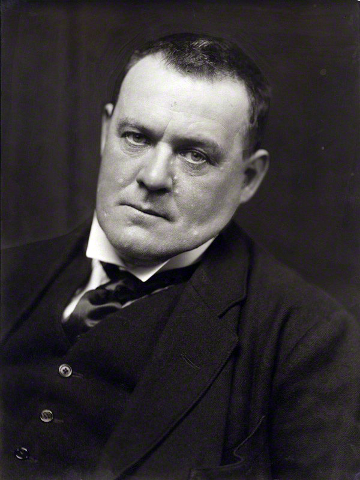

MORE BEASTS
(For WORSE CHILDREN)
VERSES
BY
H.B.
PICTURES
BY
B.T.B.

Hilaire Belloc, or in full Joseph-Hilaire-Pierre-René Belloc was born July 27, 1870, in La Celle-Saint-Cloud, France, and died July 16, 1953. He was a famous french poet, essayist, and historian. He was the author of several childrens books that parodied other popular childrens books. The prelude to More Beast, was a short-story book containly poems offering tongue and cheek advice to children, it was called The Bad Child's Book of Beast.